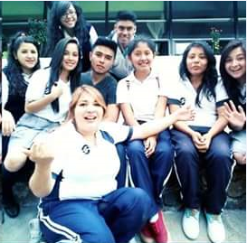
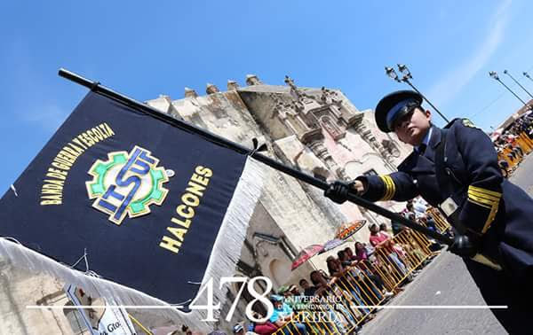
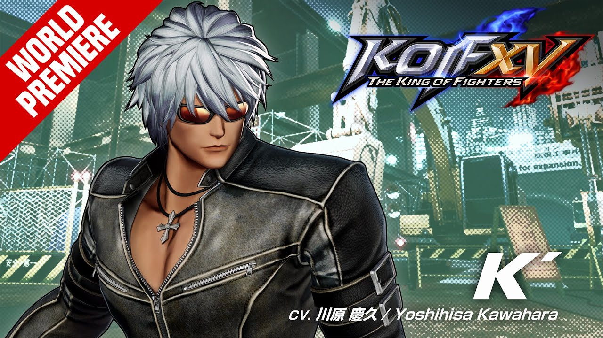
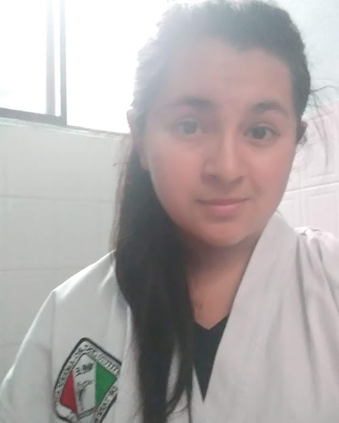
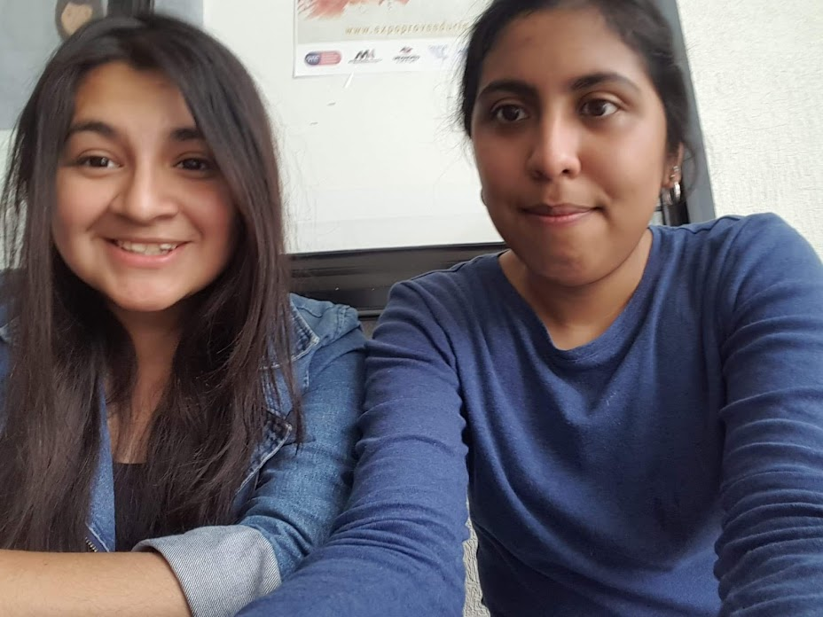

Estudiante de Ing. en Sistemas Computacionales - Diseñadora
¡Hola! Hice esta página para que puedas leer acerca de mi. Yo nací
un 22 de Julio, allá en el no tan lejano 1997, por lo que podrás deducir tengo más de 20 años.
Hasta antes de entrar a la prepa, yo no conocía más allá de donde vivía, mi educación básica
transcurrió en el kinder, primaria y telesecundaria de una colonia vecina.
Cuando fue momento de ingresar al bachillerato apliqué para entrar al CBTIS 217 y no pasé el examen,
tuve que esperar casi un año. Luego de ese tiempo, me da gusto escribirlo, formé parte de la primera
generación del CECYTE Uriangato, en 2013, no contabamos con plantel así que tomabamos clases en
aulas que nos prestaba el ITSUR.

Mi etapa de la prepa fue sin dudarlo de las mejores, personas entraron a mi vida y también salieron. A pesar de que llevaba un modelo de bachillerato general, sentí más apego a las materias relacionadas con computación, la física, las matemáticas y el diseño gráfico.
En 2016, cursé por primera vez Ing. en Sistemas Computacionales, no tenía idea de como programar, y fue algo que se me complicó, aprobé PseInt 3 veces, me gusta mucho Java y C#, conocí los conceptos: Frontend y Backend, como anécdota; muchas veces me fui a segunda oportunidad cuando los maestros pedían examenes con interfaces gráficas, porque me concentraba mayormente en que la aplicación se viera bien y fuera intuitiva, pero descuidaba su funcionamiento interno.
Los primeros semestres de universidad son raros, pues tienes de dos sopas; lo bueno: nadie te dice que hacer y lo malo: nadie te dice que hacer.
Fuera de la escuela, ¿Quién soy?
Fuera de la vida escolar, soy una persona que disfruta de cosas como un paseo en moto, salir a comer, algo sencillo y que a la vez me hace feliz pero debo describir más acerca de mi, así que:
-Soy diseñador gráfico de oficio, trabajo medio tiempo.
-Hago fotografía de moda, desde la producción de la sesión hasta la postproducción.
-Me gusta tocar guitarra y la edición de video.
-Aunque ya no tengo mucho tiempo, me gusta mucho ver anime y leer manga.
-Mi anime favorito es Shingeki no Kyojin.
-Mi cantante favorito es Kenshi Yonezu.
-Y en español, La Oreja de Van Gogh.
-Quiero conocer Japón.
-Me gustan los videojuegos, mis favoritos son los producidos por SNK-Neogeo.
-Entreno taekwondo en mis tiempos libres.
-He participado en escoltas y bandas de guerra por poco más de 10 años.
-Me gusta escribir y participar en concursos de oratoria.
-Disfruto programar, pero no me gusta la programación competitiva.
-Amo la música y las artes.
-Me gusta mucho el diseño de moda




Ella es mi amiga Victoria, nos conocimos por la banda de guerra, viajamos a concursos, compartimos clases, ella está próxima a graduarse de Ing. en Sistemas. Personalmente considero que las amistades más duraderas se dan durante la carrera.